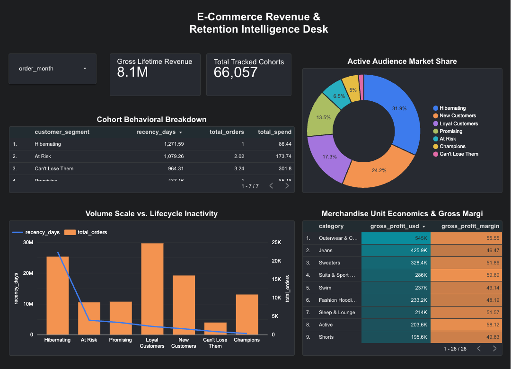
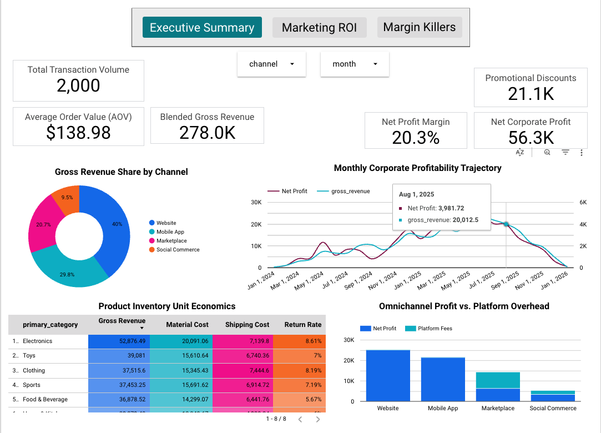
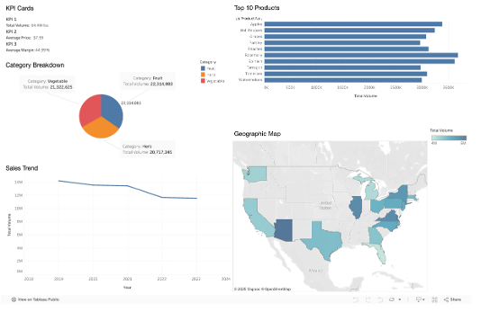
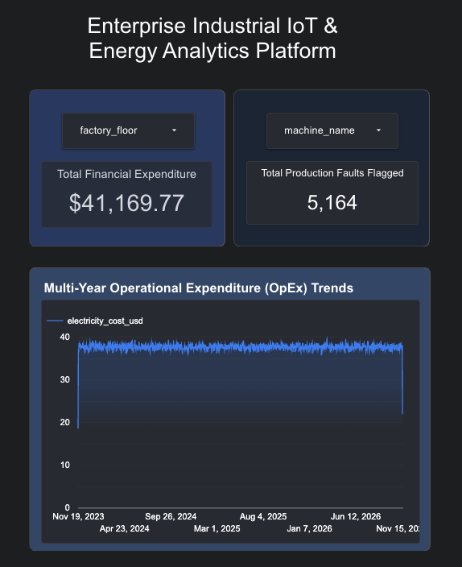
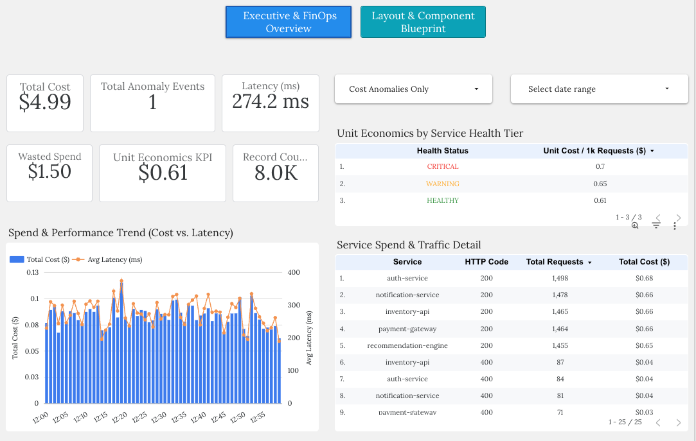
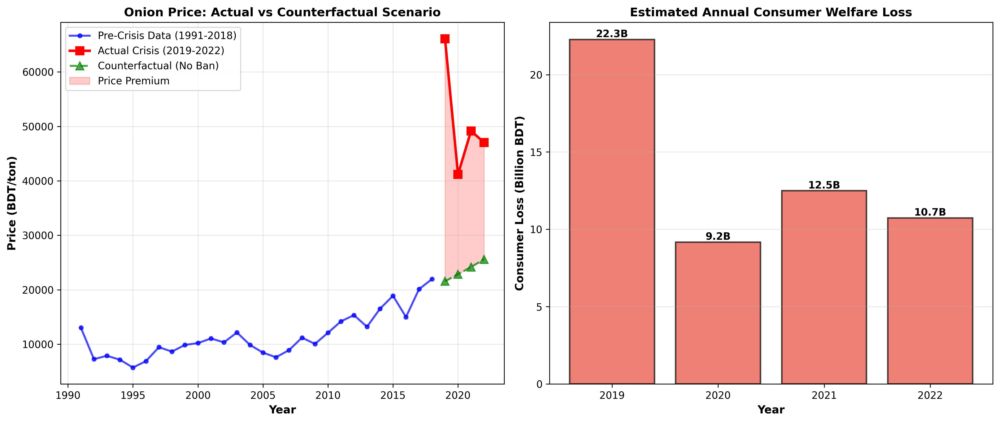
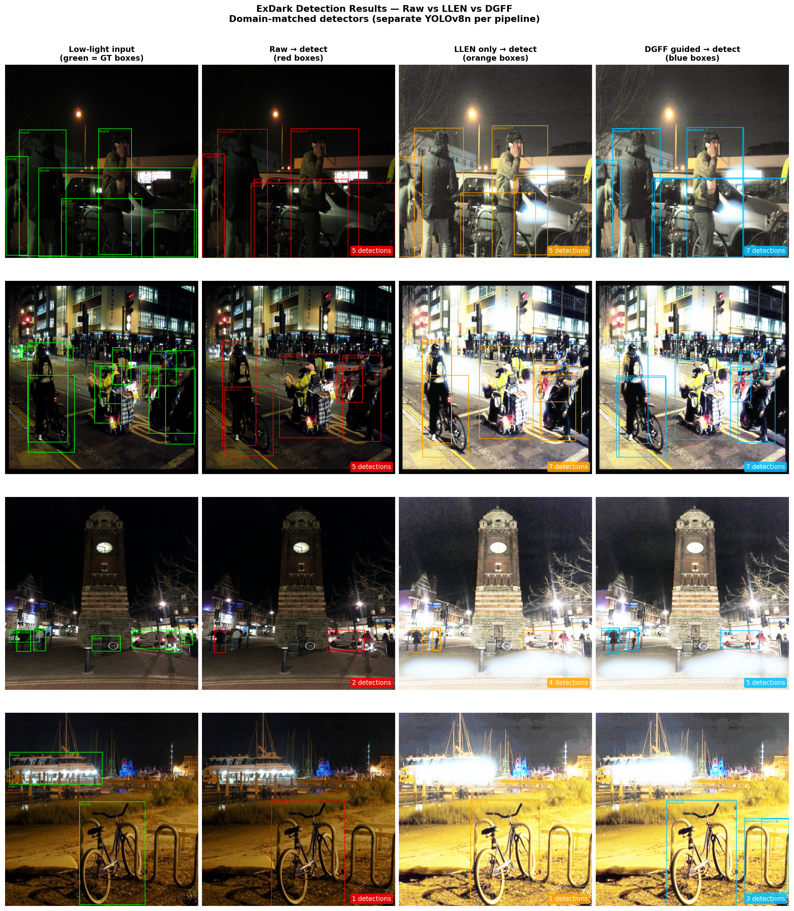
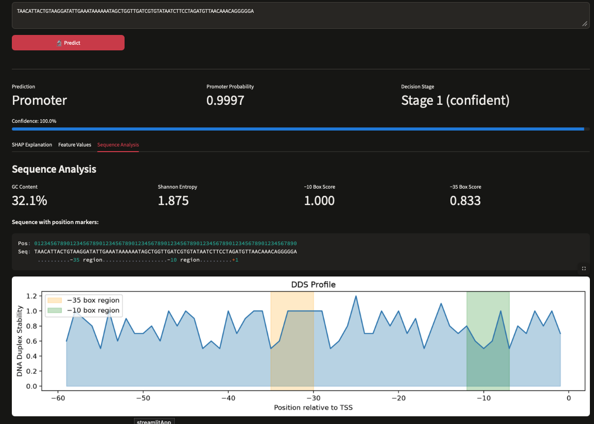
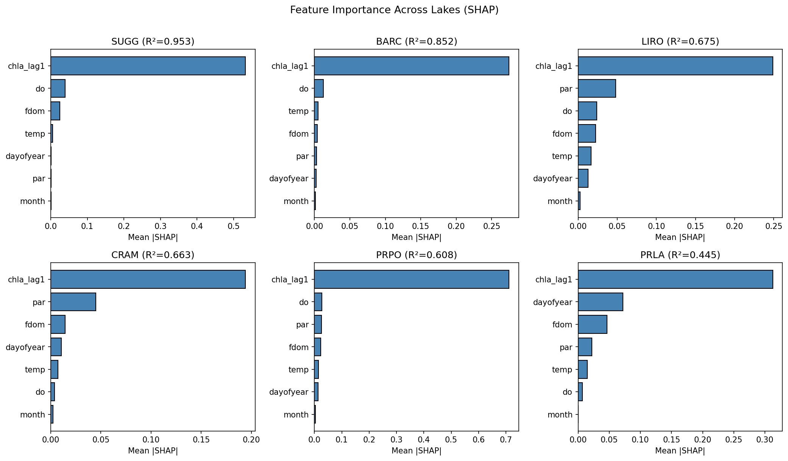

SQL Server, Azure Data Factory, Databricks and BigQuery, with a focus on data quality checks, ETL validation and clear documentation. My engineering background includes real-time sensor data on ESP32 and STM32 hardware.
Pipelines, warehouses and analytics. Each links to its repository.






Applied models with measured results.



Hardware and systems work that sits alongside my data engineering.
Secure ESP32 and ESP32-C6 nodes communicating over ESP-NOW. Measured about 35 kB/s throughput, 99.97% authenticated-packet success and a 4.14 ms round trip.
View repository →O-RAN RAN Intelligent Controller experiment with multi-agent reinforcement learning, using NS-3 simulation and a Python control plane in Docker.
View repository →SQL (SQL Server, Azure SQL, PostgreSQL, BigQuery), Python (Pandas, NumPy, Scikit-Learn), C, JavaScript (React)
Azure (Databricks, Data Factory, Blob Storage), GCP (BigQuery), AWS (S3, Athena, Glue), ETL/ELT, data modeling, data warehousing
Looker Studio, Tableau, Excel (Power Query, pivot tables), A/B testing
Git, Docker, Linux, REST APIs, Firebase, MongoDB, ESP32/STM32
Open to data engineering and analytics engineering roles.